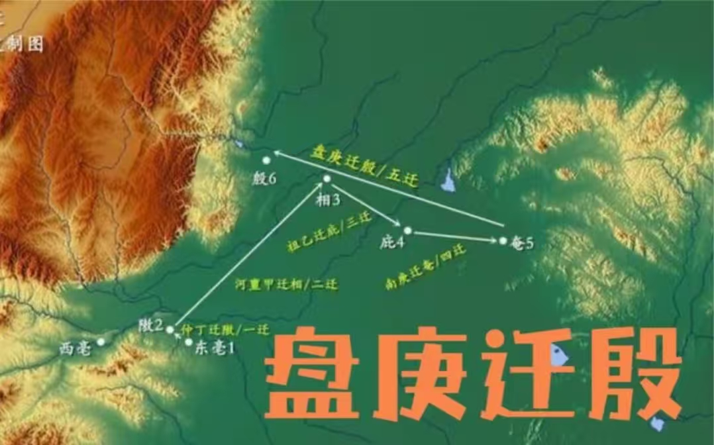

盘庚迁殷
商王盘庚为了摆脱水患、整顿吏治、巩固统治，毅然决定将都城从奄（今山东曲阜）迁至殷（今安阳小屯村一带）。这一历史性决策不仅解决了商朝长期的内忧外患，更开启了殷商文明长达273年的辉煌时代。盘庚迁殷使安阳成为中国历史上第一个有文献可考、为考古发掘所证实的商代晚期都城遗址，为后世留下了丰富的甲骨文、青铜器等珍贵文化遗产。
安阳建城
战国时期，安阳地区已成为诸侯国间争夺的战略要地。公元前257年，秦国攻破赵国都城邯郸后，安阳正式建城设县，开始了其作为中原地区重要城邑的历史。此后历经秦汉时期的繁荣、魏晋南北朝的战乱与融合，安阳凭借其优越的地理位置和丰富的资源，逐渐发展成为中原地区政治、经济、文化的重要中心之一。
邺城衰落，安阳兴起
公元580年，北周丞相杨坚为了消除北齐残余势力的影响，下令焚毁北齐都城邺城（今河北临漳），并将相州、魏郡、邺县三级治所全部南迁至今安阳境内。这一历史性事件标志着邺城作为北方政治中心的地位彻底终结，而安阳则由此崛起，成为豫北地区新的政治、经济、文化中心。此后数百年间，安阳一直保持着区域中心城市的地位，为中原地区的发展繁荣做出了重要贡献。
彰德府设立
公元1192年，金朝为了加强对中原地区的控制，将相州升为彰德府，取"彰明德行"之意。这一举措不仅提升了安阳的行政级别，更奠定了其作为豫北地区政治、经济、文化中心的地位。此后，彰德府的建制历经元朝的延续、明朝的发展和清朝的完善，统治区域基本稳定，行政格局影响深远。至近代，彰德府虽然改为安阳县，但作为豫北重镇的地位依然稳固。
重要文化遗产
安阳拥有众多举世闻名的文化遗产，这些珍贵的文化瑰宝不仅见证了安阳的辉煌历史，更是中华民族文明进程的重要标志。以下是安阳最具代表性的几处文化遗产：

殷墟
殷墟是中国第一个有文献可考、并为甲骨文和考古发掘所证实的商代晚期都城遗址，2006年被列入世界文化遗产名录。这里出土了大量珍贵文物，包括甲骨文、青铜器（如司母戊鼎）、玉器等，是中国考古学的摇篮，也是研究中国古代文明的重要基地。

中国文字博物馆
中国文字博物馆是全球唯一以文字为主题的国家级博物馆，位于安阳殷墟遗址附近。馆内收藏了从甲骨文到现代汉字的各种文字文物，系统展示了中国文字的起源、发展和演变历程，是了解中国文字文化的重要窗口。
红旗渠
红旗渠是20世纪60年代林州人民在极其艰难的条件下，历时10年修建的大型水利工程，被誉为"人工天河"。它不仅解决了林州地区长期缺水的问题，更孕育了"自力更生、艰苦创业、团结协作、无私奉献"的红旗渠精神，成为新中国精神的重要象征，2016年入选世界灌溉工程遗产名录。